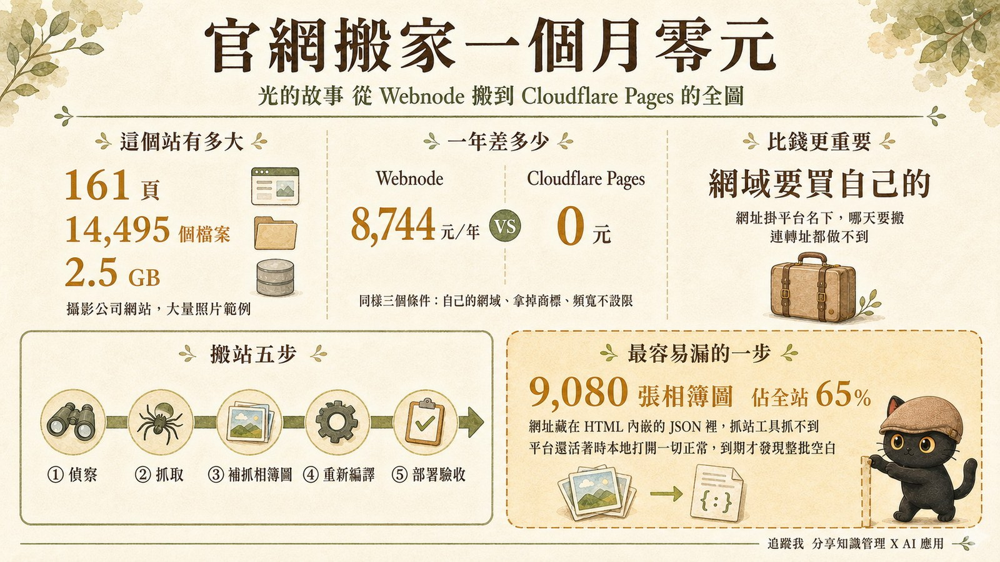
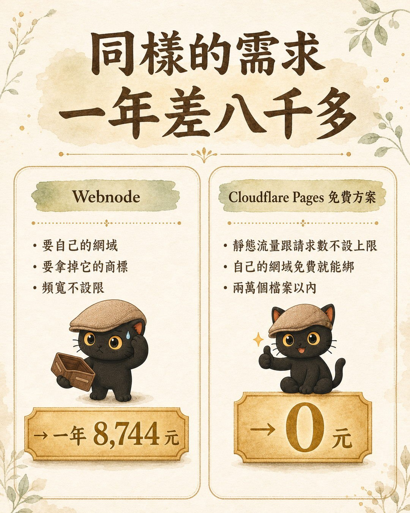
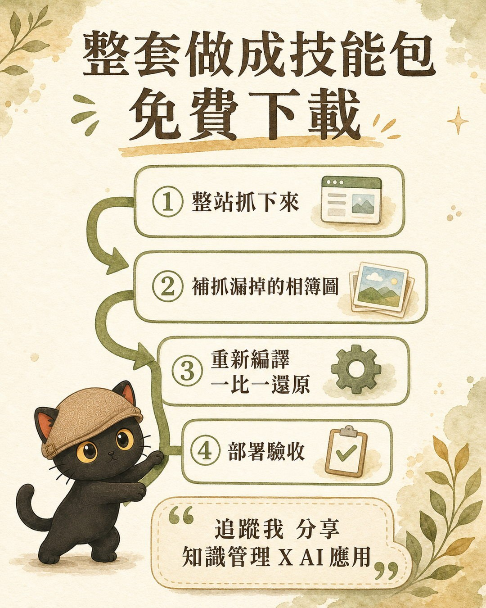

這篇在講什麼
先給你看成品：lightstory.jiangyude.com，這個站現在跑在 Cloudflare Pages 上，可以直接點進去看。它是一個攝影公司的網站，放了大量照片範例，161 頁、一萬四千多個檔案、2.5 GB，本來在 Webnode 上放了很多年。2026 年 8 月我把它整站搬過來，掛在自己已經有的網域底下，畫面一比一還原，每個月零元。這篇把三件事講清楚：為什麼搬（價格表與網域歸屬）、怎麼搬（五個步驟，其中一個坑讓我前兩次都以為搬完了其實沒有）、搬完之後多了什麼。流程整套做成技能包，免費下載。
- 還在付 Webnode、Wix、Strikingly 月費的小工作室、攝影師、個人品牌，想知道每個月付的錢有沒有零元的選項。
- 不會寫網頁、以前靠建站平台拖拉模板，現在會用 AI 了，想知道能不能自己接手。
- 已經試過把網站抓下來備份，但不確定抓得完不完整的人。
- 一張 Webnode 與 Cloudflare Pages 的台幣價格對照表，四個欄位：儲存、頻寬、自己的網域、移除平台商標。
- 搬站五步驟與最容易漏的那一步：相簿圖藏在 JSON 裡，一般抓站工具抓不到。
- 一份技能包，從偵察、抓取、補抓相簿圖、重新編譯到部署驗收，給你的 AI 照著做。

先講錢：同樣的需求，一年差八千多
我的需求很單純：要有 SEO，能放大量攝影作品。攤開來就是三件事：自己的網域、拿掉平台商標、頻寬不設限。
Webnode 的方案以年繳折扣後的月價計算（2026 年 8 月 23 日查官方定價頁，台幣用當日匯率 1 美元 31.82 元換算）：
| 方案 | 台幣／月 | 儲存 | 頻寬 | 自己的網域 | 移除 Webnode 商標 |
|---|---|---|---|---|---|
| 免費 | 0 | 100 MB | 500 MB／月 | 不可，掛 webnode 子網域 | 不可，掛 Webnode 廣告 |
| Limited | 143 | 500 MB | 1 GB | 可 | 不可 |
| Mini | 270 | 3 GB | 3 GB | 可 | 不可 |
| Standard | 410 | 10 GB | 10 GB | 可 | 可 |
| Professional | 729 | 50 GB | 無限制 | 可 | 可 |
| Business | 1,015 | 100 GB | 無限制 | 可 | 可 |
2.5 GB 的攝影站，儲存塞得進 Mini，但 3 GB 的月頻寬對圖站不實際；要拿掉商標最低 Standard；三個條件一起滿足的最低方案是 Professional，年繳 274.80 美元，換算約 8,744 元（月價是四捨五入後的數字，直接乘 12 會差幾塊）。
Cloudflare Pages 的免費方案：
| 項目 | 數值 |
|---|---|
| 靜態資源的請求與頻寬 | 不設上限 |
| 每次部署的檔案數 | 20,000 檔 |
| 單檔大小 | 25 MiB |
| 自訂網域 | 每個專案 100 個，SSL 自動發 |
| 每月建置次數 | 500 次 |
| 費用 | 0 |

光的故事 14,495 個檔案、最大單檔沒超過 25 MiB，整個在免費額度內。
- 網站放 GitHub、Vercel 還是 Cloudflare？三家免費額度、商用限制與功能差異
那篇是「搬去哪」的選擇題，三家平台的免費額度與商用條款都查過。這篇是選定 Cloudflare 之後怎麼搬。
比錢更重要的：網址掛在誰名下
這件事很多人沒注意。
沒買網域的時候，網址是 xxx.webnode.page 這種平台子網域。子網域的控制權在平台手上，你拿不到 DNS，也拿不到伺服器。後果是：
- 不能設 301 轉址。哪天要搬家，舊網址指不到新站。
- 網址能不能保留、保留多久，逐平台逐方案不同，要查該平台的官方說明。
- 搜尋引擎在舊網址上累積的訊號不會自動轉移。新站可以重新被索引，但要時間。
SEO 的基礎是自己的網域。這點 Webnode 官方的 SEO 設定說明自己也這樣講：自訂網域比免費子網域在 SEO 上基礎更強。差別在於，Webnode 要付費方案才能綁自己的網域，Cloudflare Pages 免費方案就能綁。
以前為什麼選 Webnode
以前會選 Webnode，是因為我不會寫網頁，也不會架站。照片丟上去，版面拍一拍就很好看。所以貴歸貴，好用就忍著。
Webnode 還是好用，只是時代變了。現在 AI 做網頁又快又好，我自己也知道怎麼叫 AI 設計出好看的版型。用 AI 用得更順手，就換個地方放。
這裡沒有要踩 Webnode 的意思。它解決的問題是「不會寫網頁的人也能有好看的網站」，這個問題現在換了另一種解法而已。
搬站實際怎麼做：五個步驟
這整套在我的知識庫裡是一份 SOP，首例就是光的故事。這裡講骨架，細節與指令在技能包裡。
第一步：偵察，先看清楚再動手
先讀 robots.txt 與 sitemap.xml，把所有頁面網址列出來。光的故事的 sitemap 有 161 筆。
但 sitemap 不是唯一來源。它可能過期、可能漏頁。正確做法是取聯集：sitemap、站內爬連結、平台後台的頁面清單、分析工具的網址紀錄，四個來源合起來才是全部。
接著看資源放在哪個網域。這步不能跳過。Webnode 把圖片放在獨立的 CDN 網域，CSS 與 JS 放在另一個，主網域的 HTML 只是骨架。不先看清楚，下一步一張圖都抓不到。
第二步：抓取，兩個必開的開關
用 wget --mirror 抓，但有兩個開關不開就白抓：
| 開關 | 不開會怎樣 |
|---|---|
| 用網址清單餵進去，不是從首頁往下爬 | 漏掉沒有內部連結指向的孤兒頁。光的故事有 22 頁只能靠直接輸入網址進入，爬蟲永遠走不到 |
| 跨網域抓取，把 CDN 網域列進去 | 一張圖都抓不到。第一輪抓回來 15 MB 全是 HTML，開起來是沒有圖沒有排版的裸文字 |
第三步：補抓藏在 JSON 裡的相簿圖，這是整篇最重要的一段
光的故事的相簿、燈箱、輪播圖片網址，寫在 HTML 內嵌的 JSON 設定字串裡，不在 <img src> 上。而 wget 只改寫它自己認得的網址（標籤屬性、CSS 的 url()），不解析 JSON 字串。
規模：9,080 張圖，佔全站圖片的 65%。
同一個站前後被抓過三次，前兩次都自認完整，實際上都漏了這 9,080 張，漏的原因完全相同。那份 SOP 存在的唯一目的，就是不要再漏第三次。
補抓的做法是寫一段小程式掃所有 HTML，把 JSON 裡的圖片網址撈出來。要做三層還原（HTML 實體、JSON 跳脫斜線、副檔名當右邊界），少一層就漏。細節與程式碼在技能包裡。
第四步：重新編譯，Webnode 的結構跟 Cloudflare 不一樣
抓回來的東西不能直接部署，要整理成靜態站的結構：
- 檔名帶 query 參數：磁碟上存成
DSC04268.jpg?ph=abc123，靜態託管會把?當參數分隔符，上線後全部載不出來。要建一份原始網址到本地檔名的對照表改寫。 - 同名圖片：全站有 25 組同名圖片，放在不同的 CDN 路徑底下。整理目錄時要保留 CDN 網域當子目錄，不能把圖片扁平化到一個資料夾，否則互相覆蓋。
- 導覽列指向 www 版本：161 頁的選單都連到
www.開頭的網址，而 www 版只抓到 139 頁。要把導覽連結改寫回完整版再丟掉重複資料夾，不然整站選單全斷。 - 分享連結與追蹤碼：
og:url指向舊站要改掉，否則分享到 LINE 時預覽連回死站；GTM 與 GA 追蹤碼先問帳號歸屬再決定留不留。
做完這一步，畫面就是一比一還原。
第五步：部署到 Cloudflare Pages，然後真的驗收
部署用 wrangler pages deploy，一萬四千多個檔案用指令列比較好控制與重試。第一次整包上傳，之後增量部署只傳變動的檔，161 檔 6 秒。
驗收才是重點。前兩次失敗的真正原因，是兩個看起來很像驗收、實際上什麼都沒驗到的做法：
| 假驗收 | 為什麼是假的 |
|---|---|
| 用程式檢查檔案存不存在 | macOS 檔名正規化不敏感，磁碟比對會過，瀏覽器的 HTTP 請求卻失敗。必須發真實 HTTP 請求 |
| 用 grep 找不到線上網址殘留就宣稱乾淨 | 檢查腳本刻意跳過所有 http:// 開頭的連結，而漏掉的圖恰好全是那種。grep 沒殘留不等於沒問題，要看檢查範圍涵蓋了什麼 |
真驗收有六項：頁數比對（sitemap 每一筆都要有對應檔案）、全站 HTTP 掃描（只看 200 不夠，錯誤頁也可能回 200，要一併看內容型別與長度）、資源全量實測（不是抽樣，光的故事測了 14,165 個）、抽取範圍涵蓋 HTML 內嵌 JSON、檔案完整性（0 bytes 與檔頭檢查）、殘留線上網址三種寫法都掃。
- 兩個 AI 同時改一個網站，為什麼會打架？
站搬到自己手上之後，下一個問題是多個 AI 一起維護。那篇講的是同一個 repo 兩個 session 互卡的實際事故與防打架規則。
搬完之後多了什麼
搬站當下的目標只是「備份、不要付錢」。搬完之後才發現多了幾件原本在平台上做不到的事：
- 自己的網域：lightstory.jiangyude.com 上線，成本 0 元。
- 4O 的技術地基：161 頁統一補了 robots、sitemap、canonical。在平台上這些能不能自己改，要看方案。
- 課程頁直接長在站上：兩個手機 AI 創作課的頁面從知識官網複製過來，其中一個課程簡報加了密碼，只給上過課的人看。這種「一頁一個規則」在建站平台上能不能做，要看方案有沒有開。
- 之後要加 AI 客服，也是在自己的站上加：不用等平台開功能。這件事還沒做完，目前卡在 Cloudflare Workers 的執行環境限制，寫出來是因為它是搬到自己地盤之後才有的選項。
- 你的網頁其實沒鎖：公開資訊、付費內容、機密隱私該放哪一層
課程簡報加密碼那段的原理在那篇：搜尋不到跟進不去是兩件事，六層存取分級怎麼判斷。
你的第一步
搬之前先問自己三個問題：
| 問題 | 為什麼要先問 |
|---|---|
| 方案哪天到期？ | 到期的後果逐平台不同，要查該平台官方說明。有些補救（例如在舊站加新網址公告）只能在到期前做 |
| 站上有沒有動態功能？ | 表單、會員、購物車、留言，靜態備份一律救不回來，只剩外觀 |
| 有沒有自己的網域？ | 沒有的話，這次搬家是買網域的最好時機，否則下次搬家一樣被綁住 |
三題都答完了，把這段貼給你的 AI：

整套流程做成技能包：偵察、抓取的兩個開關、補抓 JSON 裡相簿圖的程式碼、重新編譯的路徑規則、部署與六項真驗收清單。免費，下載後放進你的 AI 工具技能包資料夾，跟它說「整站備份」或「幫我把 [網址] 整站搬走」。
想繼續聊這個
我每個月固定辦兩場免費線上講座，分享 AI 應用與知識管理的實戰做法。如果你正在幫自己或客戶決定網站要不要搬、搬去哪，歡迎先從社群開始。
本篇所有價格與額度為 2026 年 8 月 23 日查證結果，台幣為當日匯率換算。平台方案隨時可能調整，重要決策前請重新核對官方頁面。
本篇引用來源
- Webnode 定價頁、Webnode 免費網站說明（2026-08-23 查；台幣以 1 USD ＝ 31.82 TWD 換算）
- Webnode SEO 設定說明（自訂網域比免費子網域在 SEO 上基礎更強）
- Cloudflare Pages Limits、Cloudflare Pages Functions Pricing
- 光的故事搬站數字（161 頁、14,495 檔、2.5 GB、9,080 張相簿圖、22 頁孤兒頁、25 組同名圖、14,165 個資源實測）：我的整站備份 SOP，2026-08-21 實作紀錄